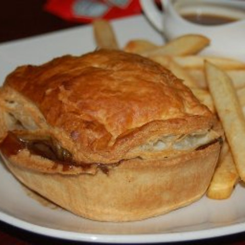

<!DOCTYPE html>
<html lang="en"></html>
<head>
    <title>Spaghetti Bolognese</title>
    <meta charset="UTF-8" />
    <meta name="viewport" content="width=device-width,initial-scale=1" />
    <meta name="description" content="" />
</head>
<body>
    <h1>Steak & Kidney Pie</h1>
    
    <h2>Ingredients:</h2>
    <ul>
        <li>Lamb kidneys</li>
        <li>Diced beef</li>
        <li>2 medium onions</li>
        <li>Plain flour</li>
        <li>Beef stock</li>
        <li>Salt & pepper</li>
        <li>Pastry</li>
    </ul>
    <h2>Instructions:</h2>
    <ol>
        <li>Heat oil in large frying pan and brown beef all over. Set aside, then brown kidneys in same pan. Add onions and cook for 3-4 minutes.</li>
        <li>Return beef to the pan, sprinkle flour over and coat meat and onions.</li>
        <li>Add stock to the pan, stir well and bring to boil.</li>
        <li>Turn heat down and simmer for 1.5 hours without lid. If liquid evaporates too much, add more stock.</li>
        <li>Remove from heat. Add salt and pepper and allow to cool completely. Place mixture into pie dish.</li>
        <li>Roll pastry over dish and bake for 30-40 minutes until golden-brown and puffed.</li>
    </ol>
    <h4><a href="../index.html">Back</a></h4>
</body>
</html>